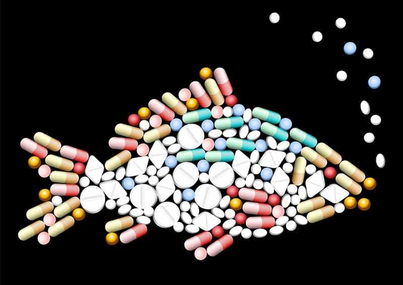

Recentemente, foram identificados em parte da água de alguns municípios (exemplos incluem Campinas, Porto Alegre, Rio de janeiro, e muitos outros), resíduos de compostos derivados de fármacos, hormônios sexuais e produtos industriais. Interferentes endócrinos, essas substâncias quando ingeridas em grandes concentrações ou por tempo prolongado, podem interferir significativamente no funcionamento de glândulas de espécies animais, assim também como em humanos.
Essas substâncias podem entrar no ambiente aquático de várias maneiras, como através do esgoto doméstico, resíduos industriais, ou até mesmo excreções de organismos aquáticos.
A presença de altas concentrações de hormônios na água pode ter diversos impactos ambientais. Isso pode afetar diretamente a vida aquática, interferindo nos sistemas reprodutivos de peixes e outros organismos. Além disso, pode causar desequilíbrios nos ecossistemas aquáticos, comprometendo a biodiversidade.
A exposição a águas contaminadas por hormônios também levanta preocupações para a saúde humana. Essas substâncias podem entrar na cadeia alimentar, afetando os alimentos que consumimos. Estudos indicam que a exposição a altas concentrações de certos hormônios na água pode estar associada a problemas de saúde, incluindo distúrbios hormonais e impactos no sistema endócrino.

As estratégias de eliminação de hormônios da água são cruciais para minimizar os impactos ambientais e de saúde associados à presença dessas substâncias nos corpos d'água. A eliminação eficaz de hormônios na água é desafiadora devido à sua natureza complexa e à necessidade de abordar fontes múltiplas de contaminação.
Dentre algumas das estratégias comuns, estão:
- Estações de Tratamento de Esgotos (ETEs): ETEs desempenham papel vital na remoção de hormônios do esgoto doméstico antes da liberação na água ambiente.
- Tratamento Avançado em Estações de Tratamento de Água (ETA): Tecnologias avançadas, como ozonização e filtração avançada, são eficazes na remoção adicional de hormônios após o tratamento convencional.
- Técnicas de Filtração Natural: Zonas ripárias e úmidas atuam como filtros biológicos, auxiliando na decomposição e remoção de hormônios na água.
- Educação Ambiental: Conscientização pública sobre o descarte adequado de produtos com hormônios é crucial para reduzir sua introdução no ambiente.
- Inovações Tecnológicas: Pesquisas buscam desenvolver tecnologias inovadoras, como nanomateriais, para remoção de hormônios em escalas pequenas e grandes.
- Monitoramento Contínuo: Programas de monitoramento constante avaliam a eficácia das estratégias e identificam áreas problemáticas, permitindo ajustes necessários.
 Fórmula estrutural de um dos hormônios estrogênios, o Estradiol (C18H24O2)
Fórmula estrutural de um dos hormônios estrogênios, o Estradiol (C18H24O2)